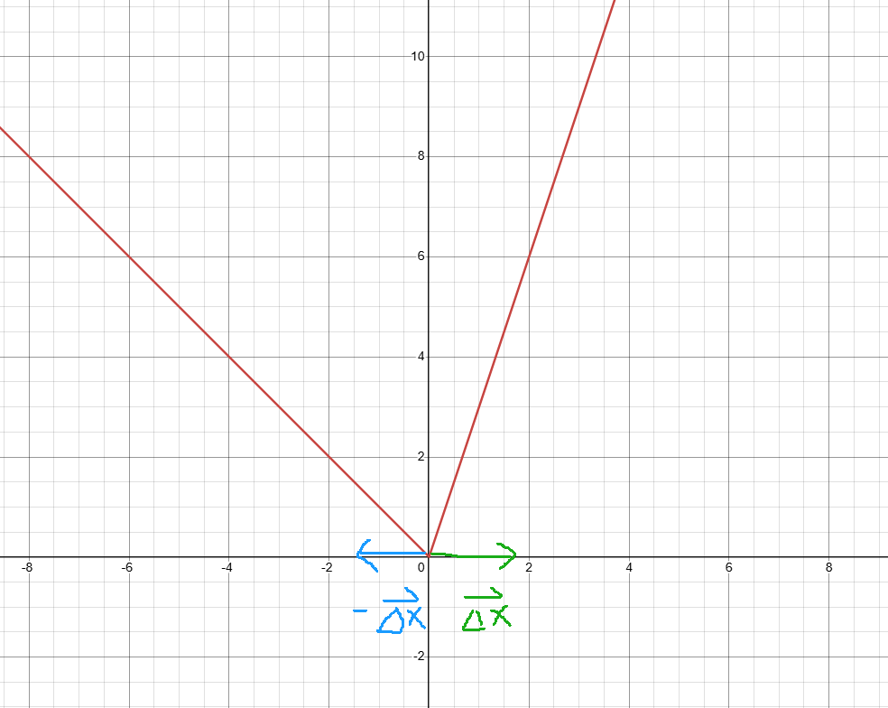

graph TD;
A[全微分]-->B[偏导数];
A-->C[方向导数];
A-->D[连续];
C-->|x或y轴正反两个方向的方向导数相反|B;
B-->|偏导数在某点连续|A;
1 偏导数与全微分
这节课的结构跟我们之前学习的一元函数特别的相似，再加上我之前学过高等数学，所以学这节课相对于初学者来讲要容易的多。但即使这样，我也是花了14个小时才把它啃下来，所以从侧面可以看出数学分析的学习是多么得不容易。
我们首先回忆一下数学分析（陈纪修第三版）上册学习的内容，针对一元函数，我们首先学习什么是极限，然后提出闭区间套定理、Cauchy收敛原理等收敛准则，然后开始定义什么什么是极限，之后提出导数、微分、积分、不定积分、级数等，那么多元函数和向量值函数也是按照一元函数的结构搭建起来，所以我总说这本书从第十一章开始，就是开始新的轮回，准确的说就是将一元函数的性质拓展到Euclid空间上。
1.1 偏导数
对于一个多元函数，我们关心的是其各个自变量的变化能在多大程度上影响因变量的变化。为了研究方便，首先应该采取控制变量法，关注在一个点上只有一个变量变化，其他的变量都不变，会导致函数值有哪些改变？或者改变的幅度有多大？
当只考虑一个变量对函数值的影响时，完全可以把其它无关的变量看成常数，这样多元函数就变成了一元函数，那么所研究的变量的变化所导致函数值的变化就可以通过把多元函数当成一元函数对变量的求导来得出那个点上的变化率。这就是偏导数的定义，为什么叫偏导数？就是因为多元函数的变量很多，但是当我们只关心其中一个变量对函数值的影响时，只需要把多元函数针对这个变量去求导，所以就有所偏颇，于是我们称为偏导数。
如果一个多元函数针对某个区域的每个点，每个变量都可以求偏导，则称它在这个区域是可导的。
1.2 方向导数
对于一个二元函数来讲，偏导数的几何意义是在某点处沿着x轴或y轴的方向变化时函数值的变化率。那么我们自然还想知道除了x轴、y轴两个方向之外，其它方向的变化率。这该如何解决呢？
首先来看看，偏导数在数学语言上的定义：
\[ \lim_{\Delta x \to 0} \frac{f(x_0+\Delta x, y_0)-f(x_0,y_0)}{\Delta x} \]
通过这个定义，我们可以看出偏导数其实就是在函数值变化除以x坐标的变化。类似的，对于其它方向的变化，我们也可以定义为由于在这个方向上的变化而导致的函数值的变化除以在这个方向上变化的距离，但略微有一个点不同，我们来看一下数学语言的定义：
\[ \lim_{t \to 0^{+}} \frac{f(x_0+tcos\alpha，y_0+tsin\alpha)- f(x_0,y_0)}{t} \]
既然是方向导数，我们必须要用向量来表示方向，怎么表示？实际上可以用任何一个这个方向上的向量来表示，但是我们习惯还是用单位向量来表示，即 \(\displaystyle \mathbf{v} = (cos\alpha,sin\alpha)\),这样任意一个这个方向的向量都可以表示为 \(\displaystyle \mathbf{v} = (tcos\alpha,tsin\alpha)\),这个向量的长度很显然就是 \(\displaystyle t(t>0)\) ,t越小，向量的长度越小。那么从定义来看，在几何意义上就是，根据所给的向量方向，通过方向移动极其微小的值能对整体的函数值产生多大的变化。这里注意一下，如果在定义域的某个点给定一个向量，当所有坐标想这个向量指定的方向极其微小的变动时，其对函数值的影响就是方向导数的值。在此基础上，我们再看看跟这个向量方向相反的向量的方向导数会有什么变化？
\[ \lim_{t \to 0^{+}} \frac{f(x_0-tcos\alpha，y_0-tsin\alpha)- f(x_0,y_0)}{t} = \lim_{t \to 0^{-}} \frac{f(x_0+tcos\alpha，y_0+tsin\alpha)- f(x_0,y_0)}{-t} \]
如果我们只在以向量方向的角度去看这个多元函数时，我们会发现，它可能会变成下面的图像：

当按照方向向量给的方向去截取多元函数的平面，就会得到一个一元函数的图像，其中x轴是是方向向量的大小变化，y轴显示的是多元函数值。如果对应的一元函数在该点处，不可导。那么我们就会得到其左右的导数极限不一样，也就意味着多元函数在这个向量的正反两个方向的方向导数不一样，所以方向导数很看重方向二字，如果方向不一样（相反也不行）就会造成方向导数的值产生很大差别。
那么对于偏导数来讲，通过数学符号的定义可以看到。无论是从x轴的正方向移动还是负方向移动，函数值的变化量与x轴的变化量之比都是不变的。如果从一元函数的角度来看，图像在这点处是可导的，也就意味着斜率不变。如果在这点处，从x轴正负两个方向上去求方向导数，我们可以发现它们是两个相反数。这是因为在方向导数的几何意义中，所得到的数值是函数在这个点处按照这个方向前进非常微弱的距离会造成函数值多大比例的变化（无论哪个方向，这个前进的距离都是正的）。对于偏导数来讲，其几何意义为在某个点处按照x或y轴方向微弱移动（这个移动有正有负）对函数值变化的影响，假设多元函数在某个点可偏导，且偏导数为正，那么在很小的范围内，朝着x或y轴正向移动，函数值变化值为正，负向移动，函数值变化值为负，这样函数值变化量与距离的变化量比值是一定的。但是对于方向导数来讲，向x或y轴正向移动，函数值变化值为正，这没有问题，如果朝着x或y轴的负方向移动，函数值的变化量为负，这也没有问题。可是，最终方向导数计算的数值是函数变化值与移动距离的比值，这个移动距离在偏导数中有方向，而在方向导数中永远为正的，所以这就导致了用方向导数去计算x或y轴的变化率时，会得到两个相反数。
总结来讲，如果一个多元函数在某点的偏导数不存在，不意味着在这点处对应的两个方向导数不存在；如果偏导数存在，那么对应的两个方向导数的数值一定互为相反数。
1.3 全微分
讲完导数之后，我们就要看多元函数的微分了，跟一元函数类似，如果在某点多元函数函数值的变化量能写成如下形式：
\[ \Delta z = A\Delta x + B\Delta y + o(\sqrt{(\Delta x)^2+(\Delta y)^2}) \]
其中的A和B跟 \(\displaystyle \Delta x 与 \Delta y\) 的变化没有关系。可以发现当 \(\displaystyle \Delta x \rightarrow 0 和 \Delta y \rightarrow 0\) 时，\(\displaystyle \Delta z \rightarrow 0\), 那么 \(\Delta y = 0, \Delta x \rightarrow 0\) 时，\(\displaystyle A = \frac{\Delta z}{\Delta x}\)，同样可以得到 \(\displaystyle B = \frac{\Delta z}{\Delta y}\)。
如果一个多元函数可以微分的话，它便可以写成以下的形式：
\[ dz = f_xdx + f_ydy \]
1.4 多元函数各个概念的关系
现在我们已经介绍了多元函数的极限、连续、偏导、方向导数、微分的定义，现在我们要看看它们之间的联系了。
1.4.1 偏导与连续的关系
如果多元函数在某点可偏导，它会连续吗？答案是不一定。因为对于一个二元函数来讲，如果对x和y偏导都成立的话，只能说明在x、y轴方向逼近某点时，其极限等于该点的函数值。但是如果这点能被称得上是连续的话，必须各个方向逼近这个点的极限都一样且等于该点的函数值。那么如果连续能推出来可偏导吗？答案也是未必。比说说对于 \(\displaystyle f(x,y) = |x|\),在 \(\displaystyle (0,0)\) 处从x轴左面趋于零和从右边趋于零与跟 \(\displaystyle \Delta x\) 的比值不一样，所以即使这个多元函数在 \(\displaystyle (0,0)\) 连续，也不能保证其在该点可偏导。
1.4.2 偏导与方向导数的关系
偏导数从几何意义上来讲只是说从x或y轴方向上逼近与某个点时，函数值的变化量与坐标的变化量的比值的变化。而方向导数意味着坐标沿着任意一个方向的的变化所导致的函数值的变化。如果偏导存在的话，其对应的两个相反方向的方向导数一定存在，并且数值相反。如果xy轴的正负两个方向的方向导数不为相反数，则该点的偏导数是不存在。而该点的所有向量的偏导数存在，并不意味着其他方向的方向导数存在。
1.4.3 方向导数与连续的关系
如果某点的所有方向的方向导数都存在，那么意味着所有方向趋近与这个点的函数值的极限都是该点出的函数值，可以说是连续的。但如果在该点处连续，我们不能推导出函数值的变化量与离该点的距离之比的极限存在。
1.4.4 全微分与其他概念的关系
首先通过这本书的一个例题，我们可以看出，即使多元函数满足连续、偏导存在、方向导数存在也不能推导出全微分的存在。
如果全微分存在，多元函数在该点肯定连续，偏导数也肯定存在，而且任意一个方的方向导数也存在。
如果全微分存在，则以 \(\displaystyle \mathbf{v} = (cos\alpha, sin\alpha)\) z作为方向的方向导数为
\[ \frac{\partial f}{\partial \mathbf{v}} = \frac{\partial f}{\partial x} \cos \alpha + \frac{\partial f}{\partial y} sin\alpha \]
我们在此做一个总结：
1.5 梯度
梯度的定义是多元函数在某点处所有的偏导数构成的向量。对一个二元函数来讲，其在某点的梯度为
\[ \mathbf{grad f} = (f_x,f_y) \]
这里为什么要单独把梯度这个概念拿出来？主要是因为它的几何含义非常重要。针对多元函数在空间中固定一点的所有方向中，梯度这个方向是对函数值变化影响最大的方向。为什么呢？
我们知道如果一点出可微，那么在那点出对应的任意一个方向的方向导数为：
\[ \frac{\partial f}{\partial \mathbf{v}} = \frac{\partial f}{\partial x} \cos \alpha + \frac{\partial f}{\partial y} sin\alpha = <(\frac{\partial f}{\partial x},\frac{\partial f}{\partial y} ),(\cos \alpha,\sin\alpha)> = ||\mathbf{grad f}|| * ||\mathbf{v}|| * \cos <\mathbf{grad f},\mathbf{v} > \]
其中 \(\displaystyle \mathbf{v}\) 为方向单位向量。
从表达式中我们可以看出来，在该点可微的条件下，任意一个方向的方向导数不会超过 \(\displaystyle ||\mathbf{grad f}||\),当该点朝着梯度的方向是函数值增长最大的时候，当朝着梯度的反方向移动时是增长最小的时候。很显然，梯度这个概念在物理中应该是被大量应用的，尤其是在深度学习的学习中，我们非常好奇在某一点时，朝着哪些方向是使函数值变化最剧烈的方向。
梯度还是一种运算，特别类似于导数的求导。但是它的结果是一个向量，不是一个数，具体计算准则这里就不谈了。
1.6 高阶偏导数
当对一个多元函数求偏导后，我们得到一个偏导数，记住这个偏导数仍然是一个多元函数，既然是多元函数，它就有求偏导的可能性，如果它可以去在定义域内求偏导的话，我们又会得到一个偏导函数，那么这个偏导函数对于之前的原函数来讲，就是它的二阶偏导数，我们把二阶及其以上的偏导数成为高阶偏导数。
比如对于一个二元函数来讲，先对x求偏导在对y求偏导和先对y求偏导在对x求偏导得出的 \(\displaystyle f_{xy} 和 f_{yx}\),这两个二阶偏导函数一般在一点的函数值可能是不相等的，如果相等的话，必须要满足一个条件就是： \(\displaystyle f_{xy} 和 f_{yx}\)在该点处连续。
1.7 高阶微分
如果一个多元函数可微的话，它能写成如下的形式：
\[ dz = f_{x}dx + f_{y}dy \]
这里的 \(\displaystyle dz\) 指的是因为 \(\displaystyle x和y\) 的极其微小的变化量而导致的函数值的极其微小的变化量，我们发现它不仅与 \(\displaystyle dx和dz\) 有关，也与 \(x和y\) 的坐标有关，那我们也可以把 \(\displaystyle dz\) 看成一个多元函数，那么这个多元函数又可以去可微（如果能可微的话），现在我们要对其进行可微操作：
\[ \begin{align} d(dz) &= \frac{\partial(dz)}{\partial x}dx + \frac{\partial(dz)}{\partial y}dy \\ d^2z &= \frac{\partial(f_x)}{\partial x}dx^2 + \frac{\partial(f_y)}{\partial x}dxdy+\frac{\partial(f_x)}{\partial y}dxdy+\frac{\partial(f_y)}{\partial y}dy^2 \\ &= f_{xx}dx^2 + 2f_{xy}dxdy + f_{yy}dy^2（两个二阶偏导要在该点连续） \end{align} \]
有一个非常有意思的地方就是，这里又定义了一下运算符号，跟我们之前学的平方、乘法什么的有所区别：
\[ (\frac{\partial}{\partial x})^2 = \frac{\partial^2}{\partial x^2}, (\frac{\partial }{\partial x})(\frac{\partial}{\partial y}) = \frac{\partial^2}{\partial x \partial y}, (\frac{\partial}{\partial y})^2 = \frac{\partial ^2}{\partial y^2} \]
这里两个偏导的乘法是指先对前面的自变量偏导再对后面的自变量偏导，而不是指两个偏导相乘得到的函数。所以二阶的全微分，我们可以写成以下的形式：
\[ d^2 z = (\frac{\partial}{\partial x}dx + \frac{\partial}{\partial y}dy)^2z \]
同样，按照数学归纳法我们可以得到，所有阶的全微分表达公式：
\[ d^k z = (\frac{\partial}{\partial x}dx + \frac{\partial}{\partial y}dy)^k z \;\;\; (k = 1, 2, 3, ...) \]
推广到n元函数，我们可以得到其k阶全微分的表达式：
\[ d^k u = (\frac{\partial}{\partial x_1}dx_1 + \frac{\partial}{\partial x_2}dx_2 + \cdots + \frac{\partial}{\partial x_n}dx_n)^k u \; \; \; (k=1,2,\cdots) \]
1.8 推广到向量值函数
其实整个陈纪修的下册书籍里面讲概念时，都是通过一元函数推广到多元函数再推广到向量值函数。那么对于向量值函数我们怎么去定义起的偏导和微分呢？很显然，这里要借助多元函数的偏导以及微分，同时我们要把向量值函数分解成一些多元函数。
如果一个向量值函数是n元m维，也就是对于这个函数来讲，其变量向量是一个有n个维度的自变量，函数值是一个有m个维度的向量。
\[ \begin{align} f(\mathbf{x}) &= \mathbf{y} \\ f(x_1,x_2,\cdots,x_n) &= (y_1,y_2,\cdots,y_m) \end{align} \]
我们可以看到其分量表达形式为：
\[\begin{cases} y_1 = y_1(x_1,x_2,\cdots,x_n) \\ y_2 = y_2(x_1,x_2,\cdots,x_n) \\ \cdots \cdots \cdots \\ y_m = y_m(x_1,x_2,\cdots,x_n) \end{cases}\]通过这样的形式表达，其实我们就将一个向量值函数用m个多元函数表达出来了。如果每一个分量函数在 \(\displaystyle \mathbf{x^0}\) 处都可偏导，那么下面这个m行n列的矩阵就是向量值函数在这点处的导数。
\[ (\frac{\partial y_i}{\partial x_j}(\mathbf{x^0}))_{m \times n} = \begin{bmatrix} \frac{\partial y_1}{\partial x_1}(\mathbf{x^0}) & \frac{\partial y_1}{\partial x_2}(\mathbf{x^0}) & \cdots & \frac{\partial y_1}{\partial x_n}(\mathbf{x^0}) \\ \frac{\partial y_2}{\partial x_1}(\mathbf{x^0}) & \frac{\partial y_2}{\partial x_2}(\mathbf{x^0}) & \cdots & \frac{\partial y_2}{\partial x_n}(\mathbf{x^0}) \\ \vdots & \vdots & & \vdots \\ \frac{\partial y_m}{\partial x_1}(\mathbf{x^0}) & \frac{\partial y_m}{\partial x_2}(\mathbf{x^0}) & \cdots & \frac{\partial y_m}{\partial x_n}(\mathbf{x^0}) \end{bmatrix} \]
向量值函数的自变量是一个n维向量，函数值是一个m维向量，那么它的导数则是一个 \(\displaystyle m \times n 的矩阵\)，它也称为Jacobi（雅可比）矩阵。
那什么时候其能全微分呢？如果向量值函数在某个区域内可以微分，它的微分形式是怎么样的？对于一元函数来讲它的微分是一个一元函数，对于多元函数来讲其微分也可以认为是一个多元函数，那么同样，向量值函数的微分也可以认为是一个向量值函数。
如果一个向量值函数在某点处由于向量的微小变化而导致的函数值的微小变化可以被表达成如下形式，那么我们就称向量值函数在这点处是可以微分的。
\[ \mathbf{\Delta y} = \mathbf{f}(\mathbf{x^0 + \mathbf{\Delta x}}) - \mathbf{f}(\mathbf{x^0 }) = \mathbf{A} \mathbf{\Delta x} + o(\mathbf{\Delta x}) \]
其中A是一个 \(\displaystyle m \times n\) 的矩阵，而 \(\displaystyle \mathbf{\Delta x}\) 是一个自变量的变化值，其也是一个n维的向量。\(\displaystyle o(\mathbf{\Delta x})\) 是一个当 \(\displaystyle ||\mathbf{\Delta x}|| \to 0\) 时，它会变成 \(\displaystyle \mathbf{\Delta x}\) 的高阶无穷小。
如果可微，它能展现成这种形式：
\[ d\mathbf{y} = \mathbf{A} d\mathbf{x} \]
我们知道对于多元函数来讲，它在某点是否可微有一个条件，就是看它的各个偏导是否在这个点处连续，如果连续，那么就可微。对于向量值函数来讲，如果它的每一个分量函数的偏导函数都在某点处连续，那么我们就可以推出向量值函数在这点处可微。